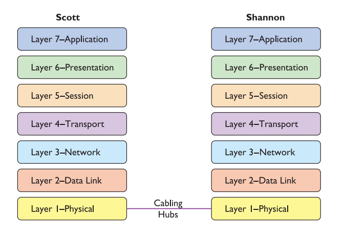

Networking Models
2024-03-17 21
The OSI seven-layer model encourages modular design in networking, meaning that each layer has as little to do with the operation of other layers as possible.Each layer on the model trusts that the other layers on the model do their jobs.
Please Do Not Throw Sauce Pizza Away
Layer 1
Layer 1 of the `OSI model` defines the method of moving data between computers.Anything that moves data from one system to another, such as copper cabling, fiber optics, even radio waves, is part of the OSI Physical layer.
Layer 1 doesn’t care what data goes through; it just moves the data from one system to another system.

The network interface card, or NIC (pronounced “nick”), which serves as the interface between the PC and the network.
Inside every NIC, burned onto some type of ROM chip, is special firmware containing a unique identifier with a 48-bit value called the media access control address, or MAC address.
MAC addresses are always written in hex.
If MAC address is 00–40–05–60–7D–49:
Please read this: <a href="https://bhg2.wordpress.com/wp-content/uploads/2017/11/unit1cn.pdf">Unit 1: OSI Model</a>
WebApplicationBuilder builder = WebApplication.CreateBuilder();
var currentAssembly = Assembly.GetExecutingAssembly();
builder.Host.AddSerilog()
.AddLocalization<IErrorMessagesLocalizer, IEntitiesLocalizer, IEnumsLocalizer, IReportColumnsLocalizer>(
new AssemblyName(typeof(PaymentSystem).GetTypeInfo().Assembly.FullName!).Name!)
.AddMasterDbContext<AdminCabinetMasterDbContext, MasterDbContext>()
.AddReplicaDbContext<ReplicaDbContext>()
.AddOpenIddict()
.AddOpenTelemetry(builder.Environment.ApplicationName)
.AddKafka<Program>();